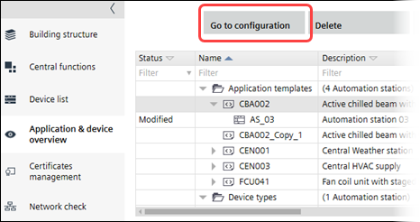

更改应用程序参数
您可以从以下位置开始更改应用程序参数Building > Application & device overview.

Change application parameters
- Select an application template.
- Click Building > Application & device overview > Go to configuration.
- Configuration > Application configuration opens.
- Complete the application configuration.
Configuring features (template) - Select the Default values task.
Default values - Click Show/hide parameter.
- The Show/hide parameter dialog box opens where you can configure properties and default values.
Show/hide parameter (dialog box) - Click OK.
- Select the I/O assignment task and assign I/O's according to the specifications of your project.
Assigning I/O's (template)
- You have changed the parameters of the selected application template.

更改应用程序模板不会增加应用程序模板版本号。中的值Version列由用户管理。
Modifying template properties